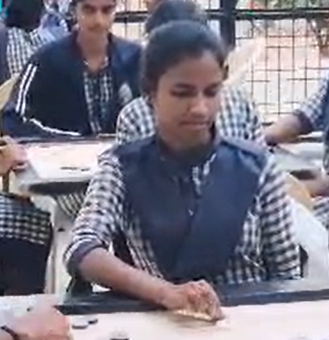

Carrom is a popular indoor board game played by two or four players. It is especially common in countries like India, Sri Lanka, and Bangladesh. The game is played on a square wooden board with pockets in the four corners. Players use a striker to hit and pocket small round pieces called carrom men, along with a red piece known as the queen. The aim of the game is to pocket all of one’s pieces before the opponent while following the rules of covering the queen. Carrom requires good aim, concentration, and skill, and it is enjoyed by people of all ages as a fun and competitive game.
